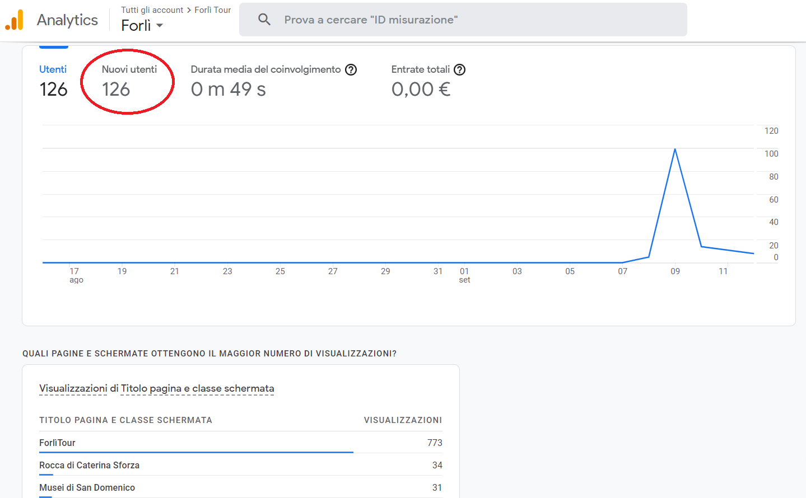
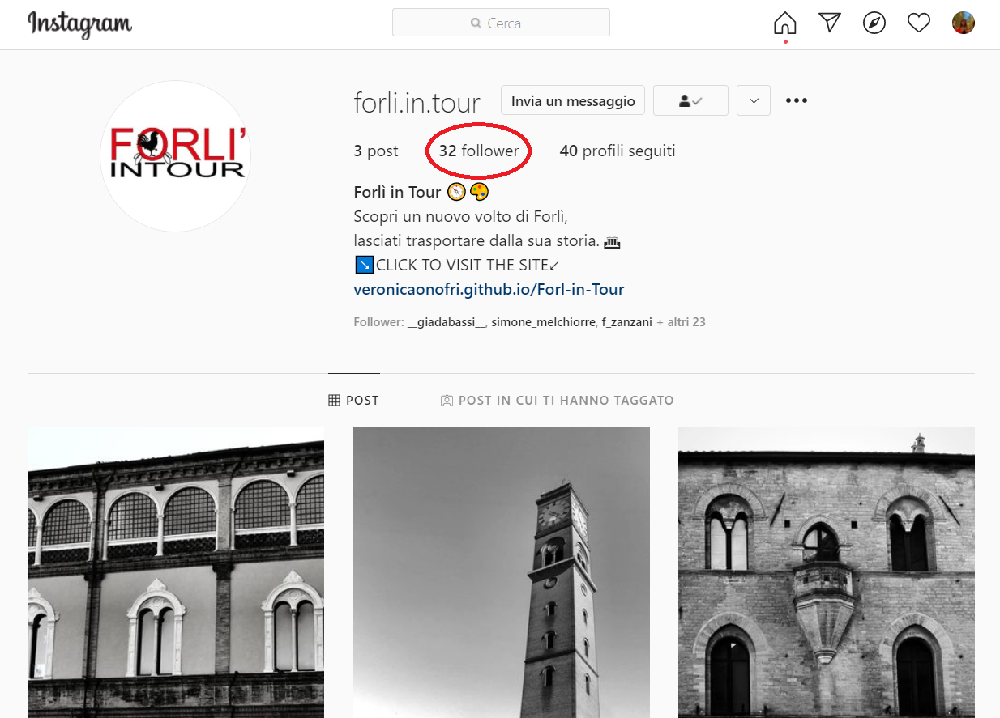
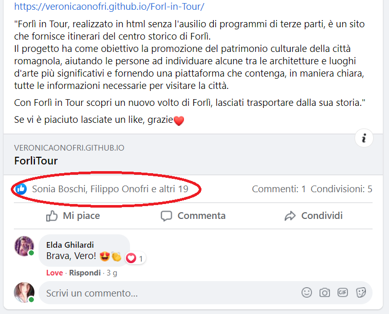
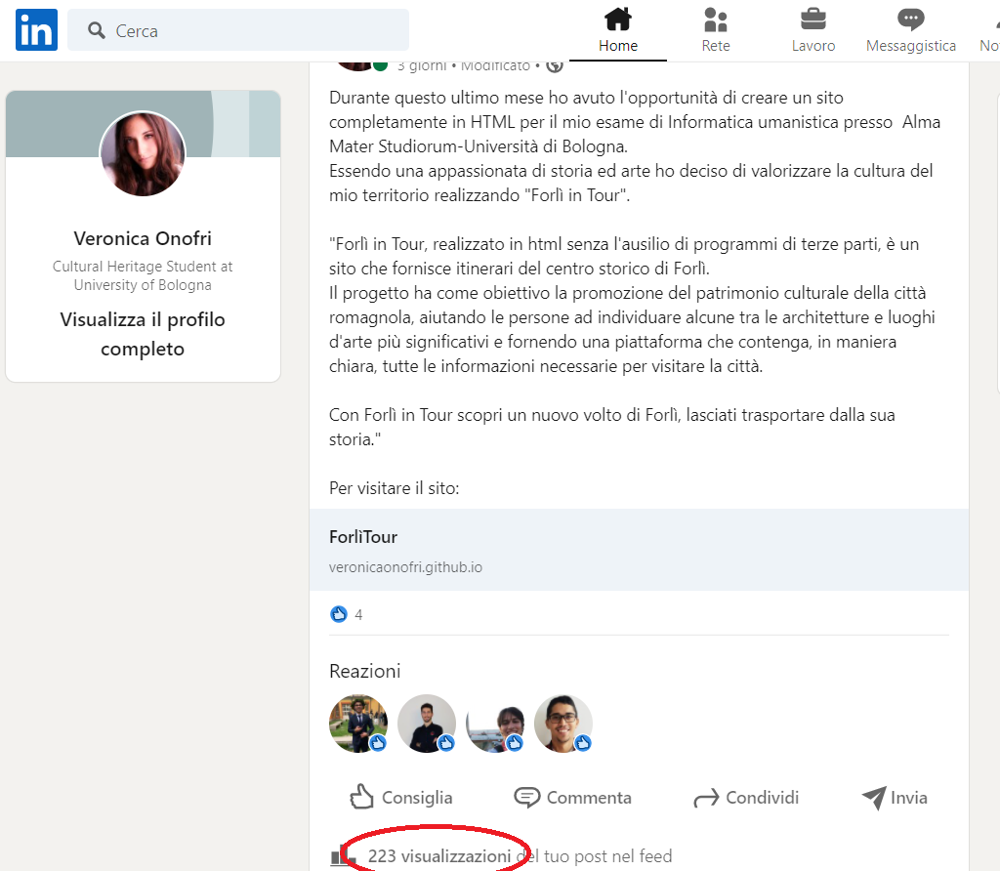

Forlì in Tour, realizzato in html senza l’ausilio di programmi di terze parti, è un sito responsive che fornisce itinerari del centro storico di Forlì. Il progetto ha come obiettivo la promozione del patrimonio culturale della città romagnola, aiutando le persone a individuare le architetture e luoghi d’arte più significativi e fornendo una piattaforma che contenga, in maniera chiara, tutte le informazioni necessarie per visitare la città. Con Forlì in Tour scopri un nuovo volto di Forlì, lasciati trasportare dalla sua storia.
Prima di un viaggio le persone passano molto tempo a creare giorno per giorno itinerari delle cose da vedere. L’Obiettivo di Forlì in Tour è quello di rendere le vacanze rilassanti ancora prima di partire, offrendo due tipologie di itinerari pronti all’uso che comprendono i punti di interesse più importanti della città.
Il target utente è principalmente quello del turista in visita, in secondo luogo “Forlì in Tour” è un sito creato non solo per i visitatori ma anche per tutte quelle persone interessate a scoprire la storia di Forlì.
I competitors analizzati sono principalmente tre:
-"Itinerari in romagna": I quali aspetti positivi sono la chiarezza dei contenuti, grafica pulita e accattivante, grande proposta di città e luoghi da visitare ed una bella selezione di immagini. Gli aspetti negativi sono invece la presenza di descrizioni eccessivamente lunghe, mancanza di una mappa per individuare i luoghi e di conseguenza gli spostamenti per raggiungerli.
-"Comune di forlì": gli aspetiti positivi sono una buona intuitività del sito per lo spostamento interno ad esso. Gli aspetti negativi sono la grafica poco accattivante, il sito con una struttura molto “profonda”, la presenza di un semplice elenco con i luoghi di interesse ed il link alle loro pagine principali senza ulteriore documentazione, inoltre il sito è dispersivo e manca di una mappa per orientarsi nel centro storico.
-"Turismo forlivese": gli aspetti positivi sono un' ampia proposta di itinerari differenti per periodi storici e tematiche, contenuti originali, la presenza di una mappa con punti di interesse per orientarsi in città, presenza di una barra per filtrare i contenuti e questionario di soddisfazione per il miglioramento del sito. Gli elementi negativi sono invece la grafica poco accattivante, eccessiva proposta di itinerari poco curati, sito caotico e mancanza di immagini.
Forlì in Tour, realizzato in html senza l’ausilio di programmi di terze parti, è un sito responsive che fornisce itinerari del centro storico di Forlì. Il progetto ha come obiettivo la promozione del patrimonio culturale della città romagnola, aiutando le persone a individuare le architetture e luoghi d’arte più significativi e fornendo una piattaforma che contenga, in maniera chiara, tutte le informazioni necessarie per visitare la città. Con Forlì in Tour scopri un nuovo volto di Forlì, lasciati trasportare dalla sua storia.

Il progetto riguarda il territorio forlivese, da questo derivano le scelte grafiche, riprendendo i colori della città di Forlì (bianco e rosso #E30613). Il Font utilizzato ('Andika New Basic') è stato scelto per la sua chiarezza, particolarità e leggibilità in modo da offrire all’utente una semplice e piacevole lettura dei testi informativi. La componente testuale è quasi del tutto assente, utilizzata per suggerire all’utente possibili interazioni con la mappa degli itinerari e per le descrizioni, corte ma complete, dei punti di interesse.
HTML e CSS
Github per la pubbicazione del sito;
Illustrator e Photoshop per la creazione e modifica delle immagini;
Font awesome per le icone social;
https://12oss.github.io/linkresponsively/ per la mappatura della cartina di Forlì;
Google analytics per monitorare il traffico web.
Forlì in tour rientra nel panorama dei siti di turismo del territorio ma si differenzia dai competitors poichè si focalizza unicamente sulla città di Forlì, fornendone informazioni semplici e sintetiche. Il suo valore aggiunto e innovativo è la presenza di due tipologie di percorsi interattivi su cartina, pronti per essere utilizzati.
Il progetto, attraverso il sito, si propone di promuovere il territorio, cercando di far avvicinare le persone al mondo della cultura.
-Il sito si rivolge ai turisti e cittadini di Forlì, di età compresa tra i 16 e 65 anni circa.
-Il target utente di Forlì in Tour è raggiungibile attraverso i social media, punti informazione e il passa parola.
-L’utente può raggiungere facilmente i contenuti di suo interesse all’interno del sito grazie alla grafica semplice ed essenziale.
-Forlì in Tour aiuta a scegliere l’itinerario migliore per l’esigenze dell’utente, l’itinerario “museale” o quello “storico”.
I mezzi migliori per promuovere Forlì in Tour sono: i social media, una campagna di sensibilizzazione alla cultura da parte del Comune di Forlì, punti informazione, locandine in giro per la città o nei locali del centro storico, partnership con ristoranti del centro storico (con inserzione di pubblicità all’interno del sito).
I molteplici obiettivi comunicativi sono stati raggiunti.
Mediante Google analytics ho potuto constatare la visualizzazione del mio sito da parte di 126 Utenti:
Inoltre grazie ai social "Forlì in tour" ha ottenuto più di 20 likes su Facebook, oltre 20 followers su Instagram e molte visualizzazioni al post Linkedin.
  